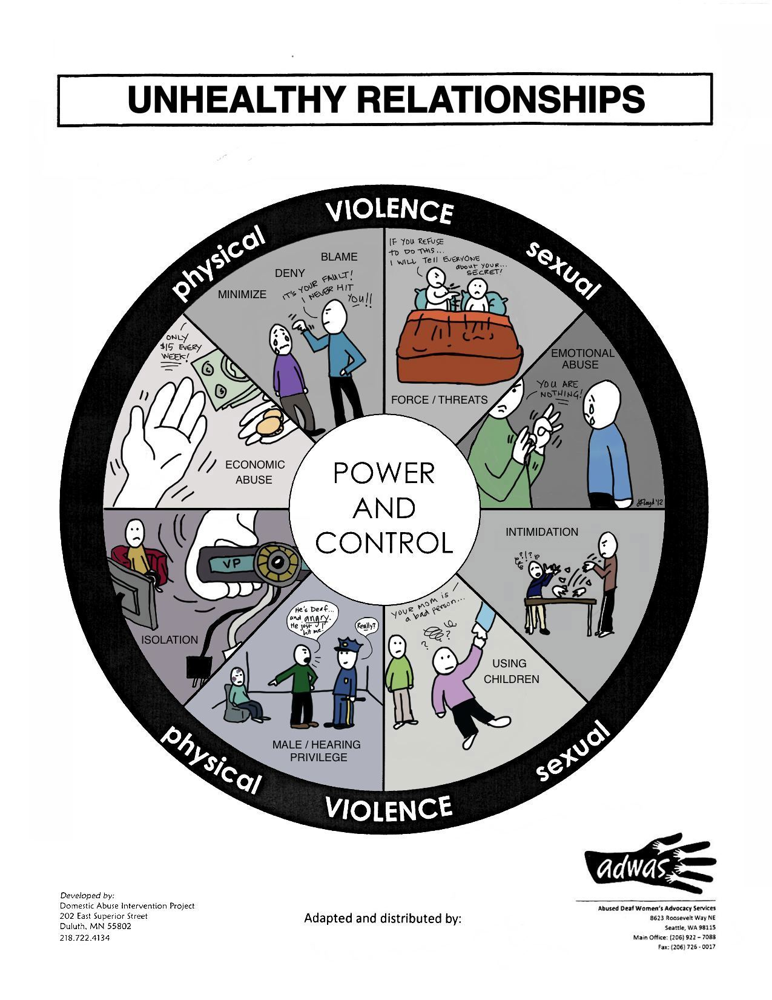

If You Are Experiencing Some Of These Signs You May Be A Victim Of Abuse

What is Domestic Violence?
Domestic violence is violent or aggressive behavior within the home committed by someone in the victim's domestic circle. Typically involving the violent abuse of a spouse or partner. Domestic violence can take the form of physical, sexual or psychological abuse.
Globally Domestic Violence is the most common form of violence experienced by women and needs to be put to a stop.
The violence you are experiencing will be put to a stop when you realize you are worth so much more then the abuse you have tolerated. Enough is enough!
These are some steps of Domestic Violence that can help your awareness be improved.
Educate yourself on the resources we give to you. Without knowledge theres no power!
Speak up! Domestic and sexual violence are silent epidemics that thrive in environments of secrecy and shame.
Pay Attention to your emotions. Are you feeling fear of your life or unease? If you are please don't minimize or deny the danger. Get away as soon as you can! Don't make it obvious or say your leaving cause that can bring more danger into the situation.
Try to avoid unsafe areas in your home espeically were guns are stored. Stay away from the kitchen were knives are exposed, the basment or garage. Anywhere you feel that you can be held captive, please just stay away.
If you are experiencing any type of abuse make sure to protect your face with your hands and arms. If you got knocked to the ground, curl up in a ball and continue to protect your face and head.
Hearing the word sorry will make you feel the most vulnerable. You might just want to except the apology and believe that it won't happen again but the truth of the matter is without any professional help toward the abuser it will most likely happen again. Or even worst the abuser may eventually kill you, himself or both of you.
Never let thier munipulation make you believe that it was your fault, cause it's not. No one ever deserves to be battered. The abuser is the one who has the problem and the one who needs to get help.
Many women start to feel confused, ashamed, afraid, guilty or humiliated as if they did something wrong and try to make it better or make it stop but you can't. This is something that isn't under your control.
Violence is dangerous and unpredictable. It may not follow a cycle. Things can even feel calm for a little while. Then the cycle begins again. If it does, the time between explosions tends to get shorter. In the future, there may be no "I'm sorry" stage.
Before it's to late please get help for yourself and have a good plan to stay safe. Find out your legal rights. You can also make a list of family and friends that can help you when theres an emergency. Your not alone! There are support groups to help you get through this. There's counseling and shelters where you and your children can stay safe. Please use these steps for a healthier life style.
You Are Not Alone
Learn the facts about Domestic Violence
An Average of 24 women per minute are victims of rape and physical violence by an intimate partner in the U.S.A.
It takes about 3 attempts for a survivor to leave their abuser. Seperating from the abuser is the most dangerous time.
Every 9 seconds in the U.S. a woman is assaulted or beaten. Women ages 20 to 24 are at the greatest risk of becoming victims of domestic violence.
65% of all murder-suicides involve an intimate partner; 96% of the victims of these crimes are female.
Just under 15% of women (14.8%) and 4% of men is the US have been injured as a result of intimate partner violence that include rape, physical Violence, and stalking by an intimate partner.
81% of women who expeience rape, stalking, or physical violence from an intimate partner report significant imapacts (short or long-term) like injuries or symptoms of post-traumatic stress disorder.
On a typical day, there are more than 25,000 phone calls placed to domestic violence hotlines nationwide.
Among violent crimes, aggravated assault was the most likely to be reported to law enforcement (52.1%). It was followed by robbery (46.6%), simple assault (37.9%) and rape/sexual assault (33.9%).